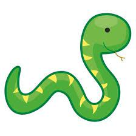

Můj Web

Nyní zkouším vytvářet svůj web po mnoha letech
myslíte že to zvládnu?
Proč to dělám a kdo jsem?
Chci změnit svůj život a vydat se jiným směremJmenuji se Martin Pešák a nyní se o mně něco dozvíte;)
co jsem do teď dělal?
po předčastném ukončení vysoké školy jsem nemohl najít dobře placenou
práci, udělal jsem si řidičák na kamion a od té doby jsem jezdil. člověk si
vydělá slušné peníze, ale je to vykoupené odloučením od rodiny, nezdravým životním stylem
ve výsledku i nízkou hodinovou mzdou, protože človek mnohdy pracuje i 15 hodin denně.
do toho neustálý stres, naschvály od ostatních řidičů a podobně.
později jsem si udělal řidičák i na traktor a téměř 2 roky jsem pracoval na něm.
pracoval jsem v lese a tato práce mě velmi naplňovala, stresu bylo podstatně méně, peněz naopak více
kolektiv byl velmi dobrý, majitel lidský, chápavý, bral zaměstnance jako lidi, ne jako čísla,
jediný kdo mi neseděl byl obchoďák, ten se choval jak kdyby mu celá firma patřila a dával nám najevo
že je něco víc, než my. Naštěstí jsem si mnohdy dokázal obstarat práci sám, tak jsem se s ním snažil komunikovat co nejméně.
Bohužel jsem ale pracoval na druhé straně republiky, takže jsem doma také moc nepobyl.
to byl hlavní důvod proč jsem se rozhodl vydat novým směrem, chci si vydělat alespoň důstojné peníze
v práci která by mě naplňovala, ale zároveň jsem se mohl každý den vracet ke své rodině
Moje vizitka